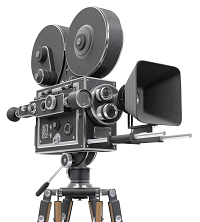

Филм постоји вековима. Можда не на исти начин како га тумачимо данас као појам, али сигурно јесте као идеја.
Као идеја о постојању нечега што ће ујединити писани, материјални и гласовни извор у један савршен визуелни приказ.
 Као такав, само је чекао на свој проналазак.
Филм је серија слика које, кад се прикажу на платну, стварају илузију покретања захваљујући пхи феномену.
Ова оптичка илузија чини да публика континуирано опажа покрет између одвојених објеката који се виде брзо у наставцима.
Филм се прави фотографисањем правих сцена камером за снимање, фотографисањем цртежа или минијатурних модела коришћењем традиционалне технике анимација или комбинацијом свих техника и других визуелних ефеката.
- Процес прављења филма је и уметност и индустрија. Концепт филма као уметности почео је са делом Ричиотиа Кануда ,,Рођење шесте уметности"
| 5 препорука сајта | ||
|---|---|---|
| НАЗИВ | ЖАНР | ГОДИНА |
| Ловац на јелене | Ратни/Драма | 1978. |
| Таксиста | Психо/Драма | 1978. |
| Живот је леп | Драма | 1985. |
| Прохујало са вихором | Љубавни/Ратни | 1939. |
| Празник у Риму | Љубавни/Ром-ком | 1953. |